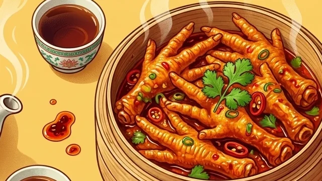

There is nothing to eat.
True, there is almost no muscle. But that was never the point of the dish.
No. 005 / Misunderstood Chinese Food
Yes — hundreds of millions of people. In China the chicken foot is not waste. It is the Phoenix Claw (凤爪, Fèngzhǎo): a prized dim sum delicacy with a 1,000-year pedigree, eaten not for the meat (there is almost none) but entirely for the texture.

It is skin, tendons, and cartilage — a texture masterpiece, not a failed drumstick.
Phoenix Claws have held a place at imperial banquets and Cantonese tea houses for centuries.
At its peak, the US exported over $1 billion of chicken feet a year to China. Someone is buying.
What Is It?
Every day, millions of chickens are processed worldwide. The breast goes to America, the thigh goes to Europe — and the feet are where cultures divide. In the West they were historically discarded or rendered into pet food. In China they are honored with dedicated recipes, classical dim sum menus, and a name borrowed from a mythical bird of prosperity.
For people meeting it for the first time, the shape is the whole shock — it still looks like a foot. For people who grew up with it, the appeal is mouthfeel: puffy sauce-absorbing skin, chewy gelatinous tendons, and soft cartilage you navigate with your tongue.
First Reaction
The same foot that Western plants once paid to dispose of became a billion-dollar import in China. Naming it after the phoenix was not marketing spin — it was a statement: if it came off the animal, it is food, and it deserves craft.

Myth vs Fact
True, there is almost no muscle. But that was never the point of the dish.
Skin, tendons, and cartilage deliver a gelatinous, sticky, chewy bite no wing can match.
The name suggests otherwise: nobody names poverty food after a mythical bird.
Imperial menus, Cantonese tea houses, and now $18 plates in London, New York, and LA.

Visual Story
Follow the foot from the processing plant floor to the bamboo steamer — the name, the trade, the anatomy, and the glow-up.
Open the storyDeep Dive
Collagen, the deep-fry puff, the 6–12 hour master braise, and why texture is the whole game.
Read the articleGuide
A tidy table of contents for the overview, the visual story, the craft, and the menu.
Browse chaptersHow to Eat It
豉汁凤爪 — steamed, puffy, coated in savory black bean and garlic sauce. The ultimate Cantonese tea-time companion and the beginner-friendly route.
泡椒凤爪 — served cold, spiked with chili, vinegar, and Sichuan pepper. A refreshing, spicy-sour late-night snack with a cult following.
Boiled down to release pure collagen, creating a naturally thick, silky, rich broth. The comfort-food route.